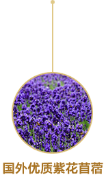
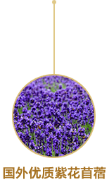

2017年初上市，在牧场、奶牛、生产、原料等方面均取得国家级有机认证。真正意义上实现了全产业链高品质有机，且可全程追溯。飞鹤研发中心立足生态原产地，倾力打造智纯营养配方。将绿色天然的有机奶粉奉献给中国千千万万的宝宝们。智纯表达了飞鹤对健康、安全和天然的追求，是对高品质的追求、更是对绿色健康生活方式的追求！智纯有机婴幼儿配方奶粉——回归自然、智享纯净呵护！
飞鹤专属牧场是地处北纬47° 黄金奶源带；
北纬47° 是国际公认的黄金奶牛饲养带，这里日照充沛，牧草资源丰富。此纬度集中了日本北海道、美国威斯康星州、加拿大阿尔伯特等世界知名畜牧地区。

 



飞鹤专属牧场及国际水准生产线均集中在北纬47° 黄金奶源带，牧场鲜奶10分钟内降至4°C，冷链运输内抵达工厂液态奶一次入料，奶粉颗粒与营养元素结合，全面均衡锁留新鲜天然营养分子。